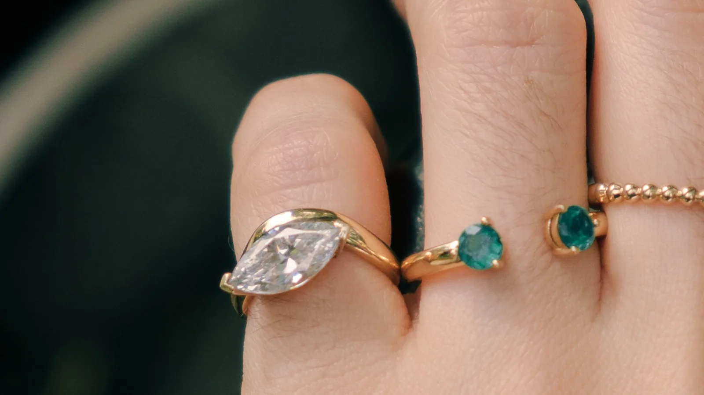
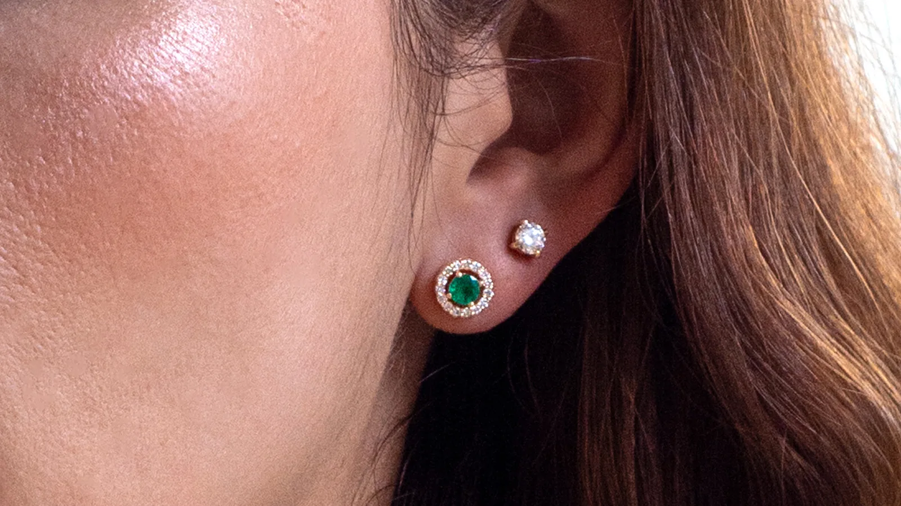
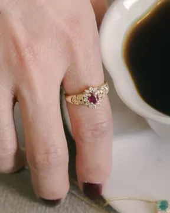
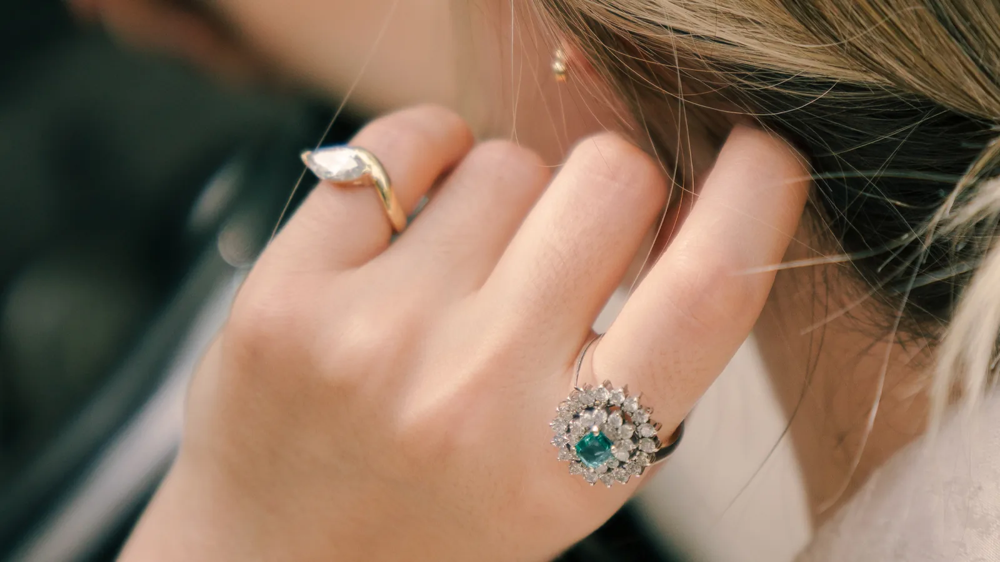
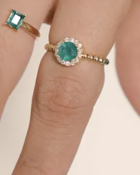
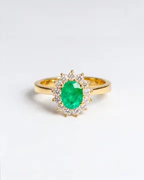
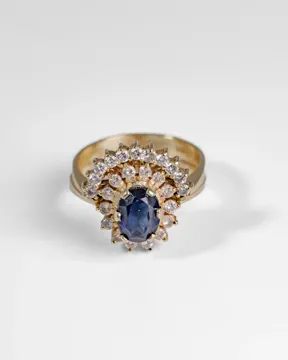

Biblioteca de fotos
59 fotos · 21 de prueba ocultas
Arrastra hasta 10 fotos aquí · JPEG, PNG o WebP hasta 25 MB · se optimizan solas
TodasEn uso 14Sin usar 45Sin descripción 0Duplicadas 12
En portada
Manos con anillos de esmeralda, rubí y diamante
Colección Regalos
Mujer con anillos SERTI y pañuelo

Anillo Rubie Flower Cluster junto a una taza
Novedades
Mano con anillo de zafiro

Anillo de esmeralda en la mano
Duplicada ×2Manos con anillos (copia)

Lady Di Emerald
Zafiro Oval